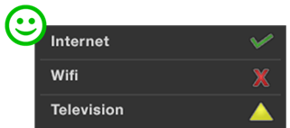
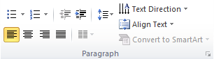
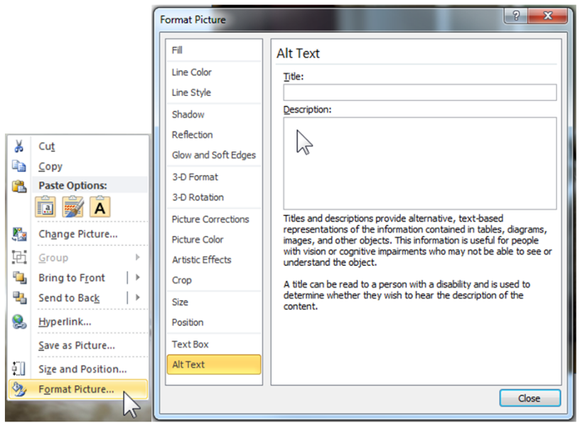

Creating accessible PowerPoint documents
Introduction
Producing accessible PowerPoint presentations requires following different rules. They are summarized below (and detailed guides are available on the WebAIM website).
In order to help you, PowerPoint includes a tool to check the accessibility of your presentation. This tool identifies the main errors and proposes different solutions.
Slide Layouts
Defining slide layouts is the first action to do in order to create an accessible presentation, it will ensure information have the correct reading order.
Use the Slide Master view: select the View tab > Slide Master to create or modify slides layouts.
Use the Master Layout submenu to add titles or footers.

Create as many layouts as types of slides needed.
Avoid adding text boxes or images directly into the presentation via the Insert menu but use the Slide Master view.
Note: if you edit the slide layout after you have created the slides, you must reapply the new model.
Presentation properties
Language
The main language must be defined in the tab File > Options > Language.
Every punctual change of language must be identified by selecting the text and: tab Review > Language > Set proofing language.
Other properties
Title, author and tags fields have to be completed in tab File > Info > Properties.
This information is accessible by everyone in Windows Explorer and are readable by the screen readers.
Use unique slide titles
Give every slide a unique and descriptive title, it allows screen reader users to clearly understand which slide they are on.
Wording
Avoid abbreviations and acronyms; explain them at the first occurrence.
If necessary, keep accentuation on capital letters (example: É or Ç): use the Insert tab > Symbol.
Formatting / layout
Use familiar sans serif fonts (such as Arial or Calibri), in a larger font size (18pt or larger).
Begin all sentences by a capital letter but avoid using all capital letters and excessive italics or underlines.
Avoid justifying the text; prefer left alignment.
In order to add white space between sentences and paragraphs, use option: right click on the text and select Paragraph… > Indents and Spacing.
Colors and contrasts
Use sufficient contrast for text and background colors
The presentation of text should have a contrast ratio of at least 4.5:1. Here are some examples on a white background:
- Foreground black : very good contrast, ratio = 21:1
- Foreground #767676 (dark grey), acceptable contrast, ratio = 4.54:1
- Foreground #AAAAAA (lighter grey), unacceptable contrast, ratio = 2.32:1
If you choose to not use the Orange Group colors guidelines, you can download the Colour Contrast Analyser tool; it will be useful for checking your contrasts.
Ensure that color is not the only means of conveying information
For people who can not see the colors or the shades of colors, it is important to convey the information differently.


Appropriate colors and contrast are necessary for people to see your presentations and understand their meaning.
Bulleted Lists or Numbered Lists
Always use the appropriate and native functions in order to create lists.

Pictures and other Images
Add alt text to images, shapes or SmartArt graphics in your PowerPoint slides.
In order to write a good alt text, make sure to convey the content and the purpose of the image and its context in a concise and unambiguous manner.
Right-click on an image and select Format Picture or Format Shape > Alt Text.

Type the alt text in the Description text box (but leave Title blank, this information is not conveyed to assistive technologies). If the picture is only decorative, leave the Description text box blank. Alternative text helps people who can’t see the screen to understand what’s important in images and other visuals. Do not use text in images to convey important information.
Note: If a picture or a chart is too complex to describe with alt text, you will need to provide a text description elsewhere. You can add the full description to the Notes section of the slide for example. In this case, put a very short description in the alt text, endings with the words: “full text description in the Notes section of this slide”.
For every downloadable file, it is necessary to specify its name, type, size and language (if different of the presentation language). Screen reader users sometimes scan a list of links, so the labels have to be simple and easy to understand.
Hyperlinks
Select the text to which you want to add the hyperlink, and then right-click. The text you selected displays in the “Text to display” box. This is the hyperlink text. If necessary, add a ScreenTip by clicking on the ScreenTip button.

For every downloadable file, it is necessary to specify its name, type, size and language (if different of the presentation language).
Screen reader users sometimes scan a list of links, so the labels have to be simple and easy to understand.
Tables
Use a simple table structure, and specify column header information.
Ensure that tables don't contain split cells, merged cells, nested tables, or completely blank rows or columns.
If a table is too complex, you will need to provide an additional description: Right-click Format Shape > Alt Text.
Audio or video file
For audio and video content, in addition to alt text, include closed captioning for people who are deaf or have limited hearing.
Video content must have synchronized captions and also needs a rich description of the visual components. Closed captions typically also describe audio attributes such as music or sound effects that occur off-screen. Subtitles typically contain a transcription (or translation) of the dialogue.
Audio content must have a transcript.
Avoid automatic launching or slide transitions.
Avoid content that blinks or flashes more than three times a second.
Set the reading order
The order in which the screen readers read the slide contents can be modified in the Selection pane.
On the Home tab, in the Drawing group, select Arrange > Selection Pane.
The elements of your slide are read in the reverse order listed in this pane.

Accessibility Checker
At least, run Accessibility Checker to make sure your content is accessible.
In File tab > Check for Issues.

Convert to PDF
Save you presentation as PDF: File tab > Save As and save as type PDF.
Check the « Document structure tags for accessibility » option.
PDF is often a better format to present PowerPoint presentations electronically.
Note: If your presentation have more than 50 slides, it is better to advise your readers to change the following setting in Adobe:
Edit > Preferences > Reading > Screen Reader Options > Page vs Document: "Read the entire document"

To check PDF document accessibility: download PDF Accessibility Checker (PAC 3).